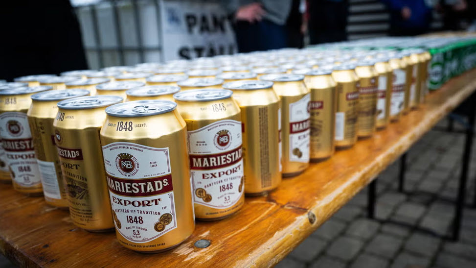

Två kalla öl. Men hur många måste du egentligen köpa för att resan till Tyskland ska löna sig?
Eller tryck Esc / klicka utanför textenFyll i din resa, bil och ölval nedan – resultatet räknas om direkt. Gula fält är sådant du kan ändra. K = källbelagt värde, A = eget rimlighetsantagande, klicka för förklaring.
Vill du räkna på din egen bil istället för våra tre schablonklasser? Testa M Sveriges bilkostnadskalkyl ↗ – den interaktiva kalkylatorn vår uppdelning bygger på.

Du behöver köpa
– öl
– flak
Alla belopp är exempel för planering, inte bindande priser. Kontrollera aktuella priser innan du bokar.
Om den här sidan
Byggd med enbart HTML, CSS och JavaScript. Inga bibliotek, ingen server – alla beräkningar sker i din webbläsare.
Källor och antaganden: se avsnittet "Källor och antaganden" ovan.